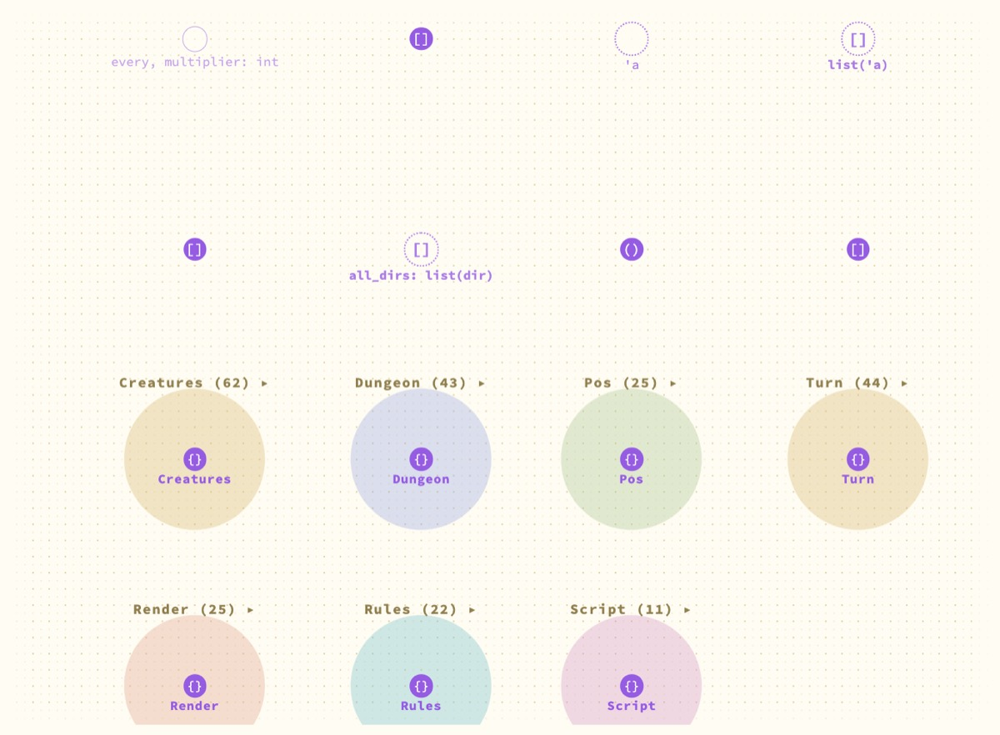
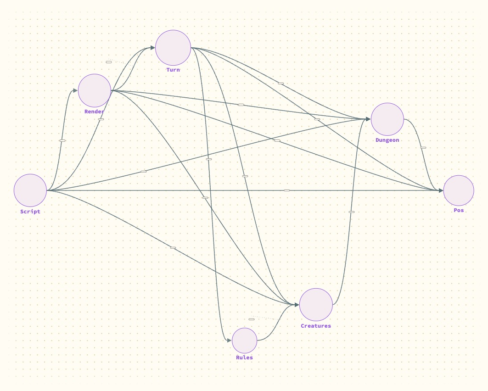
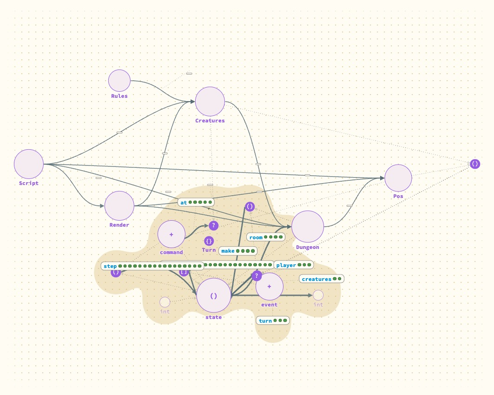

Can modules be opened in place, one at a time?
Yes, as a first cut: in the whole-project view each module is closed, shown as its interface, or open, and a click moves it to the next level. An opened module keeps its lines to the closed ones it uses. Lines into it from closed modules are lost.
- Why
Entries 7 and 8 each gave half of what Andrew asked for: a map with every module closed, and a switch that shows interfaces for the whole view at once. The useful thing is one board where the module you are reading is open and its neighbours are not.
- What I did
-
First I tried what came over from Hazel. Its canvas can already collapse a module, from a small arrow above the module's node.
Then, on the page, I gave every module in the whole-project view a level. Closed: one node, with an arrow to each closed module it uses. Interface: only what it exports, abstract types drawn closed. Open: everything. A closed module stands in for its own types, so a function in an open module that takes one of them draws its line to the closed module. A project of more than 60 definitions starts all closed. Tried on the dungeon example.
What happened



Turn. Its interface, in place: three types, seven functions with their tests. room and player draw their lines to the closed Dungeon and Creatures.The second picture answers "what does Turn offer, and what does it need from its neighbours" in one look, which neither the map nor the one-module view does.
What is wrong with it: the arrows that said Script and Render use Turn vanish when it opens, because use-arrows are only drawn between closed modules. The change is a redraw, not a motion. And a click both selects and changes level, which will get in the way.
- What it means
Three levels per module on one board is the right shape for reading a project. It wants to be done inside the canvas rather than on the page, so that opening is an animated act, a module's node stays where it was, and Hazel's collapse and this one are a single mechanism.
- Not done
Arrows from a closed module into an open one. Folders as a level above modules. Nested modules, which stay inside their parent. A visible mark for which level a module is at, and a count of what it hides.